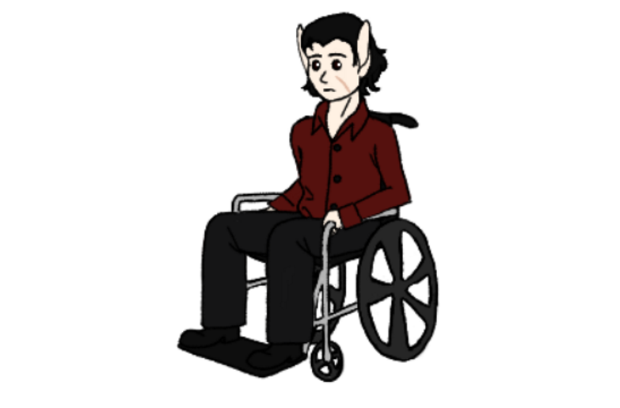

A Ukagaka, or ghost, is a desktop widget usually of a character that the user can interact with in a variety of different ways. There are a wide range of interactions that can be done with these characters, but the most common interactions include giving them gifts, asking them questions, dressing them up, and petting them.
A balloon is the box that dialogue appears in and is also what the left-click menu appears in as well. These are stylized and often customized for each individual ghost and it's highly recommended you download them as well.
The very first thing you'll need to do to download any of the below Ukagakas is download a program called SSP for Windows. You'll see a large pink button on the left with a lot of Japanese on it and in tiny letters "complete install package". You'll want to click this and install it. After you've successfully installed them, a character will appear named Emily. At this point, you can drag the .nar files of my ghosts and their balloons below onto Emily and she will install them. Afterwards, right click Emily, go to the 'change ghost' option in the menu that pulls up, and switch to the ghost of your choosing.
Erik and Ava

About: Despite being a vampire and a werewolf, Erik and Ava are madly in love. Their romance has had its obstacles due to the differences between their species, but that love has prevailed strong and true. Erik is very chatty and willing to tell you all about his life, but he'll want to keep an eye on Ava during full moons.
Features:
- They are Pettable!
- Lots of dialogue options!
- Turn the full moon on and off at will to see Ava or send her home!
- A dynamic relationship system!
Update 1 8/24/2018
- fixed an issue where dialogue appeared outside of Erik’s menu balloon.
Note: The above ghost is a character from my novel, A Candle's Flame, but the lore of all of my Ukagaka is old and no longer canon compliant with the novel. Think of these as from an alternate reality to my novel just for you to enjoy.
Riccardo
About: Riccardo is a homeless and exiled vampire prince. He's jumpy and not easy to trust from the hard life he's lived. It's up to you, the user, to gain his trust and show him good people still exist in the world.
Features:
- Pettable!
- Lots of dialogue options!
- A decaying thirst need!
- A dynamic relationship system!
- Unlockable Dress up items!
- Unlockable point and click adventure minigame!
- Interghost communications!*
- Idle Animations!
- Giftable Items menu!
- Network Updates!
*Riccardo acknowledges the following ghosts:
- Riccardo can pet Obsidian! By dragging either Obsidian or Riccardo over the other so that they overlap, Obsidian will jump onto Riccardo's lap!
- Special thanks goes to Zi for helping with this code and allowing Riccardo to pet Obsidian in this unique and awesome feature!
Dr. W.D.Gaster by Zarla
Azura by Levidre
Cat by Zdzisiu
Multiverse Sans by Excel Lynt
Hunter and Smoker by Zarla
Update 7 (10/22/2022)
- His face no longer flickers with certain surfaces
- His blood need will no longer reset to fast when he is booted up
- He will now only reject blood when he’s truly full
- Various bugs in surfaces are now fixed
- Picking up his scarf in his mini game is now more likely
- His check menu will now give the user a hint when asking how Riccardo feels about them
- His slow mode for his blood need is now slower by a whole hour
- A few pieces of new dialogue for his stuffed cat and giving him blood.
- His blood need now displays as a percentage!
————————————————————
Update 6 (2/25/2022)
- Riccardo was given some art adjustments to be true to his character which evolves a little every year.
- Riccardo’s thirst need is now more prevalent. He has a fast and slow mode that affects how quickly he gets thirsty and needs blood. When he is very thirsty, his appearance will change slightly, and he will not talk about anything but the fact he is thirsty.
- Riccardo has new menu options! He now has an ask menu on which I can build upon but already has a new juicy nugget for the user to poke at him about. He also has a check option that the user can learn how thirsty he currently is as well as a short blurb about how he feels about them.
- Some new surfaces have been added to pop up throughout his time on the user’s screen.
- New dialogue has been added both from the menu and in his random talk.
- Minor errors in grammar, coding, and surfaces have been fixed.
————————————————————
Updates 4 and 5 (7/24/2021)
- Riccardo can now hold Obsidian from Zi’s fan characters Dusty and Obsidian. Update 4 was the release of this nifty feature so that Riccardo can both communicate with Dust and hold the precious kitty, Obsidian.
- Update 5 is a fix to a lot of bugs found in the above features and a few tweaks to some dialogue
————————————————————
Update 3 (11/18/2020)
- His network updating is finally completely hammered out and works entirely. This will make updating him in the future much easier for me and less annoying for anyone who enjoys his company! :D
————————————————————
Update 2
- Bug fixes in dialogue and surfaces discovered after Update 1 was published.
- A few lines of new dialogue spotted here and there. Not a lot, but hopefully enough to make updating him again so soon less annoying.
- There’s a chance of finding him a scarf in his mini game, now! When you find the scarf, he will start wearing it! just like he will the blanket after you’ve been nice enough to give him blankets!
————————————————————
Update 1
- All surfaces redrawn in a cleaner, better art style with some improvements in anatomy.
- He was brought up to date to not have to use PNAs anymore, which means updating him with future surfaces will be easier for me and the art is a lot cleaner because of it.
- He now has a dressup item! After you’ve given this homeless and exiled prince some blankets, he will show up with a blanket over his lap!
- He got some new dialogue and some tweaking to old dialogue to be more in character. He now curses a lot less, but he’s no less grumpy and confused by your interest in him!
Note: The above ghost is a character from my novel, A Candle's Flame, but the lore of all of my Ukagaka is old and no longer canon compliant with the novel. Think of these as from an alternate reality to my novel just for you to enjoy.
Dr. Seavers

About: Dr. Arthur Seavers was made during the 2022 Ghost Jam and became a valid entry. However, he is far from finished, and is actively under construction around my school, work, and other creative projects.
None yet.
Note: The above ghost is a character from my novel, A Candle's Flame, but the lore of all of my Ukagaka is old and no longer canon compliant with the novel. Think of these as from an alternate reality to my novel just for you to enjoy.